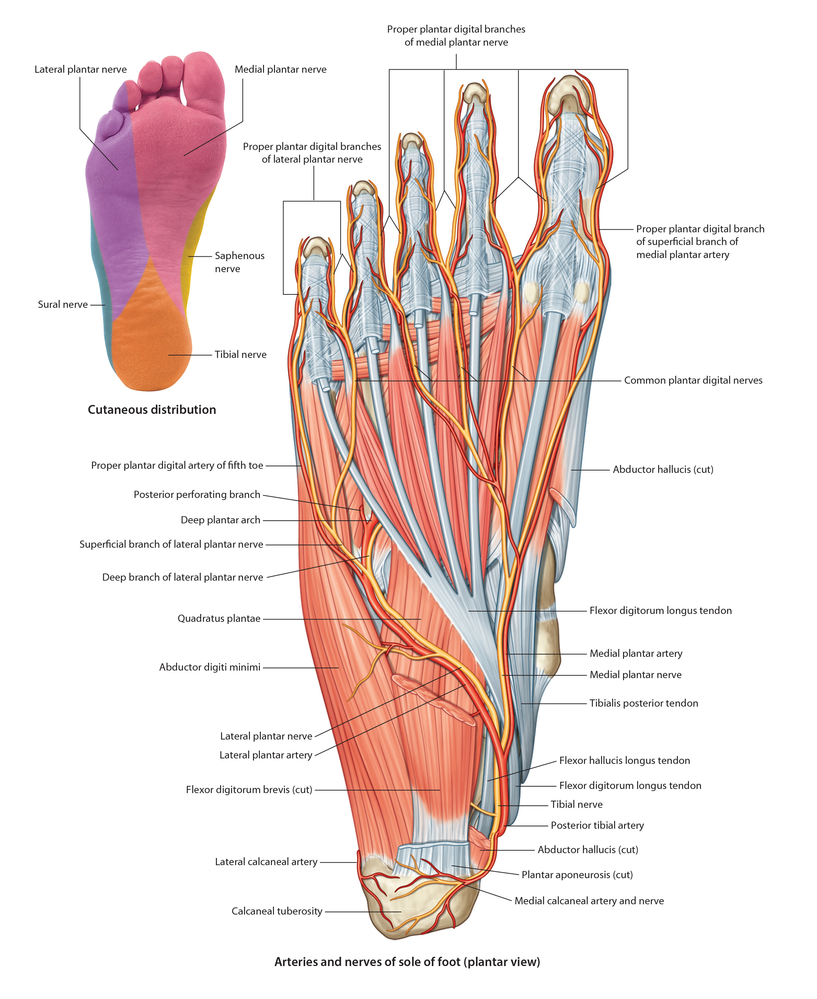

Lab 7 - Module 4 - The Foot: Page 7 of 8
×

Nerves of the Plantar Foot:
|  |
| Tap on image to enlarge |
| As the tibial nerve enters the plantar foot, it divides into the medial plantar and lateral plantar nerves. |
| Add the Tibial Nerve. |